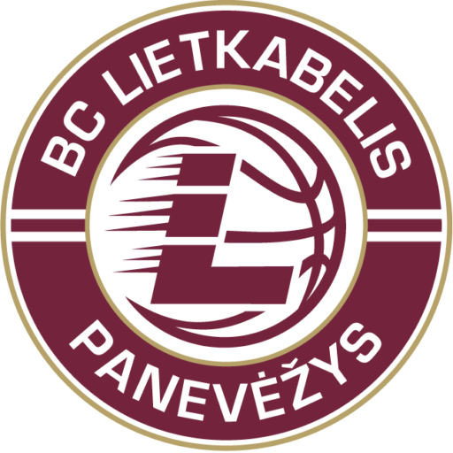

Panevėžio „Lietkabelis“
- Komandos pavadinimas: Panevėžio „Lietkabelis“
- Komandos logotipas:

- Įkūrimo data: 1964 m.
- Vyr. treneris: Nenad Čanak
- Dabartinė komandos sudėtis:
- Tadas Vaičiūnas
- Nikola Radicevic
- Panagiotis Kalaitzakis
- Karolis Giedraitis
- Vytenis Lipkevičius
- Gabrielius Maldūnas
- Kristupas Žemaitis
- Kaspars Berzins
- Gediminas Orelikas
- Grantas Vasiliauskas
- Dovydas Giedraitis
- Djordje Gagic
Nuoroda į svetainę
Grįžti